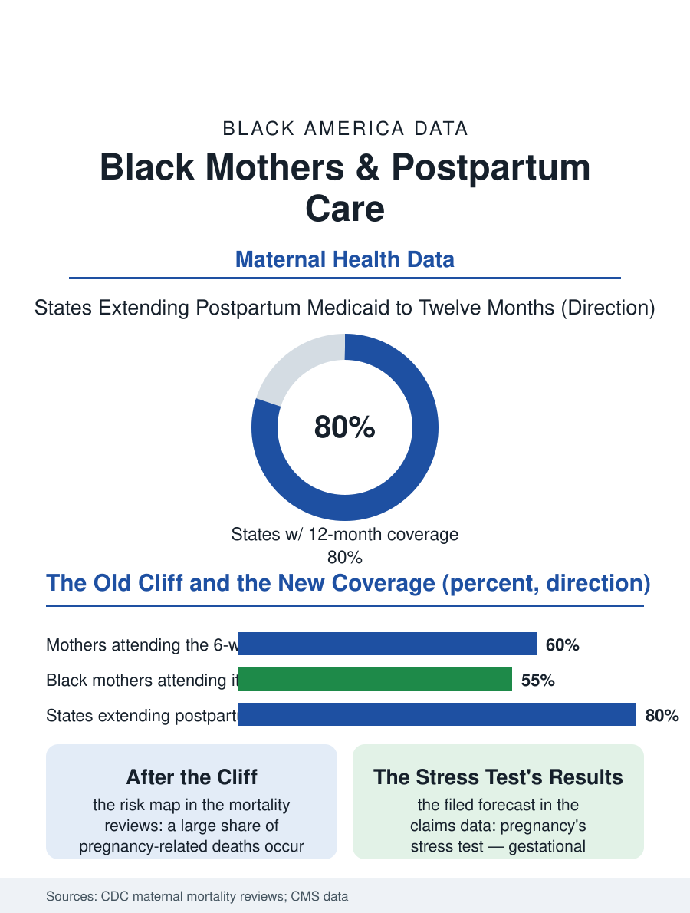

Black Public Health
The Fourth Trimester: Black Mothers After Birth
The postpartum year carries a large share of maternal deaths and the next thirty years' forecasts, and it was covered for sixty days until the recent extensions. The postpartum file.

The year after a birth is now understood, in the maternal health data, to be part of the birth itself: a substantial share of pregnancy-related deaths occur weeks to months after delivery, and the postpartum period carries its own distinct risks, hemorrhage's late forms, infection, hypertension's echoes, and the mental health file's heaviest weather. For Black mothers, whose maternal outcomes anchor this atlas's gravest disparities, the postpartum year is where the system's attention historically ended fastest. This article reads the postpartum file.
The Six-Week Cliff
The traditional structure of postpartum care in America is a single visit at six weeks, and the attendance data describe its failure plainly: a large share of mothers, Black mothers at elevated rates, never attend even that one, lost to the arithmetic of a newborn, a job without leave, transportation, and a clinic that scheduled the appointment as an afterthought. The clinical risk map makes the absence legible: the conditions that kill mothers after delivery cluster in the first days and weeks, while the chronic risks, the hypertension that pregnancy unmasked, the diabetes that gestational disease predicts, declare themselves across the following year, a risk window the six-week cliff abandons at both ends. Coverage policy built the cliff: pregnancy Medicaid historically ended at sixty days postpartum, uninsuring the mother at precisely the window's middle, and the recent policy era's signature repair, the state-by-state extension of postpartum coverage to a full year, has been adopted by most states in the program data, the largest structural improvement in the maternal file in a generation, whose effects on the visit and outcome data are now accumulating. The care model is being rebuilt alongside the coverage: the obstetric societies' current guidance replaces the single visit with an ongoing process, contact within three weeks, a comprehensive visit by twelve, and the chronic disease handoffs made explicit, a standard whose implementation the clinic systems are negotiating with their schedules and staffing.
The Mind in the Fourth Trimester
Postpartum depression and anxiety affect roughly one in eight mothers in the survey data, with Black mothers' measured rates complicated by the same undercounting the anxiety file describes, screening performed less often, symptoms voiced into systems that have historically answered Black mothers' distress with surveillance rather than support, a history the qualitative research records as a direct suppressor of disclosure. The stakes of the silence are the file's heaviest: mental health conditions, including substance use and suicide, now constitute a leading category in the maternal mortality reviews, concentrated in the late postpartum months when contact with the system is thinnest. The screening instruments exist and are cheap; the treatment capacity, perinatal psychiatry, therapy that accommodates an infant's schedule, medication counsel that weighs breastfeeding honestly, is the scarce layer, and its geography matches the maternity care map. The community layer carries its documented share: the doula relationship extended into the postpartum weeks, the home-visiting programs whose nurses appear in the safe sleep file performing the same function, and the church and kin networks whose support is real and whose capacity to recognize a clinical depression, against the cultural script of the strong mother, is the training frontier the maternal mental health programs now work.
The Body's Ledger After Birth
The postpartum year is also a metabolic and cardiovascular accounting. Pregnancy functions as a stress test whose results predict the mother's next thirty years: gestational diabetes forecasting type 2 diabetes at high rates, preeclampsia forecasting hypertension and heart disease, and the follow-up screening that would convert the forecast into prevention is completed, in the claims data, by a minority of the mothers it concerns, Black mothers at the lower end, so the stress test's results are filed and forgotten by the very system that ordered it. The interconception frame, the care between pregnancies, is where the maternal file's disparities are actually manufactured, since the mother who conceives again with untreated hypertension and diabetes enters the next pregnancy at the risk level the mortality data describe. The postpartum file closes on the calendar: a year, newly covered in most states, newly conceptualized as care rather than aftermath, and still delivered through a system that schedules like it is 1960. The mothers in the mortality reviews died, disproportionately, in the months when nobody was watching. The file's entire argument is that watching, scheduled, covered, and continuous, is the intervention, and that Black mothers, whose risk the data make plainest, are the population for whom the new coverage must become actual appointments, or remain what too much of this atlas records: a benefit on paper, expiring unused, in the year it was meant to save.
More in Black Public Health
Hypertension Among Black Adults: Prevalence, Control, and Consequences
About 55 percent of Black adults have hypertension — the highest rate of any U.S. group. Prevalence, onset, control, and the stroke, heart, and kidney consequences in the data.
Diabetes Among Black Adults: Prevalence and Complications
Nearly one in five Black adults has diabetes, diagnosed or undiagnosed — and its complications fall with particular weight. The CDC data on prevalence, control, and outcomes.
Black Life Expectancy: The Gap at Birth and Its Causes
Black life expectancy at birth is about 73 years, roughly five years below the national figure — the summary measure of every health gap in this section. The CDC data.
Source: Centers for Disease Control and Prevention, Maternal Mortality Review Committee data; Centers for Medicare & Medicaid Services postpartum extension data.